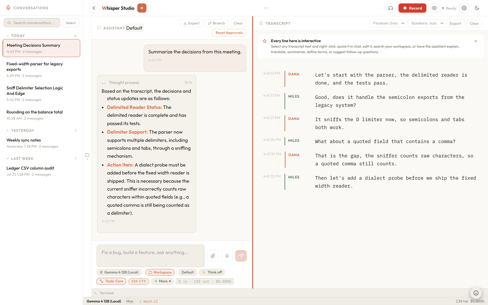

Transcription & diarization
Streaming audio over a single WebSocket, three on-device speech engines, per-utterance language identification, live translation, voice-activity gating, and speaker clustering that self-heals - and no byte of audio ever leaves your machine.
Recording is the one part of Whisper Studio that opens a persistent, two-way channel instead of
a request-response call. The browser streams raw audio up; the server streams interim drafts,
settled transcripts, and speaker corrections back down. The whole handler is a thin orchestrator
in server/websocket.py: it drives one code path regardless of which ASR
backend produced the events, and applies speaker identification on its own side so the backends
stay ignorant of each other and of diarization.
Click a box below to trace where audio flows. Notice the three paths that reach the live transcript: interims stream straight through, settled-and-labeled finals post immediately after speaker assignment, and re-clustering corrections arrive later as a separate message.

The channel
A recording session is a WebSocket to
/ws?session_id=...&backend=...&dictation=.... Before the handshake completes,
the server rejects any cross-site origin (the HTTP origin middleware never sees WebSocket
upgrades, so is_ws_origin_allowed guards it here), closing with code
1008. Two frame types then flow up the socket:
- Binary frames carry raw
PCM16mono audio at 16 kHz. They are processed strictly in order: the VAD buffer and the decoder are stateful, and decode is faster than real time, so awaiting each frame inline keeps ordering trivial without dropping audio. - Text frames are JSON control messages:
ping,set_model/set_backend(a live engine switch),set_translate(translator and target changes mid-recording),set_speakers(a participant-count hint), andstop.
Choosing a backend at connect
The ASR backend is resolved once, at connect time, so a mid-recording Settings change can
never swap models on a live stream. A per-connection ?backend= query parameter
overrides the global transcription_backend config; with no parameter, the connection
follows the config. The registry in server/asr/__init__.py maps names
to modules and imports them lazily, so an unused backend's model stack is never loaded.
| Backend | Model | Character |
|---|---|---|
parakeet (alias streaming; the default) | mlx-community/parakeet-tdt-0.6b-v3 | Lowest latency. Re-decodes the growing utterance every chunk for word-by-word interims. 25 European languages, no language ID, no translation head. The shipped config default is transcription_backend: "streaming", so this is the out-of-the-box recorder backend. |
whisper | mlx-community/whisper-large-v3-mlx | Batch. The full large-v3 checkpoint: highest accuracy, 99 languages, per-utterance language detection, a real translate-to-English head. Decodes each settled utterance in one shot; no interims. Also the fallback an unrecognized backend name resolves to. |
canary | qfuxa/canary-mlx (a vendored MLX port under server/asr/canary/) | Fast batch decodes plus live word-by-word drafts. 25 European languages, translation between any of them and English. No built-in language head, so it leans on the VoxLingua107 classifier (below). Also the translator behind the transcript's Canary translate option, whichever engine is transcribing. |
All three run through MLX on a dedicated single-worker thread pool
(max_workers=1): MLX evaluation streams are thread-local, so the model must be loaded
and every utterance decoded on the same thread. On a live engine switch the outgoing
Whisper or Canary weights are unloaded (they are 2.4-3.1 GB each and stack up fast), while
Parakeet stays resident because it is the dictation mic's always-on engine. The chat-input
microphone always passes backend=streaming, so dictation uses Parakeet even when
the meeting recorder is on Whisper or Canary. See
Model backends & modes for how local mode warms
and unloads these weights.
The backend session is created lazily on the first audio frame, and
the model is only downloaded on first use into models/. In local mode,
loading a cold model streams a model_loading progress banner to the client so the
first record is a visible ramp rather than a silent stall.
VAD and utterance gating
Audio is never sent to the model continuously. All backends push frames through the same
UtteranceBuffer in server/audio_buffer.py, which uses
webrtcvad to find natural speech boundaries. The VAD is the only speech
filter: energy (RMS) gates were tried and removed, because they silently ate quiet microphones.
In front of it sits an upward-only gain rider that steers speech toward about
-24 dBFS (at most 12x), which is what rescues a soft talker a metre from a
laptop mic or a system-audio tap running at a third of full volume; frames below the noise floor
never steer the gain, so boosted room tone cannot manufacture an utterance. An utterance settles
into a final when two conditions hold:
Enough speech
At least 400 ms of voiced audio (
MIN_UTTERANCE_MS). Shorter fragments (a cough, a stray syllable) are dropped rather than transcribed.Trailing silence
A run of silence after speech marks the end. Whisper and Canary wait the default 400 ms; Parakeet sits slightly under, at 350 ms, because its interims already show the text live, so settling a touch sooner costs nothing visible and trims label latency.
Silence inside an utterance is kept (the model uses pause structure to infer sentence boundaries), while dead silence between utterances is discarded so no model time is wasted on it. A hard cap flushes a very long utterance even without a silence boundary.
Interims vs finals
Parakeet and Canary both stream live drafts. While an utterance is still in
flight and no boundary has landed, the backend re-decodes the growing window and emits a volatile
interim - a word-by-word draft whose tail self-corrects as more speech arrives.
Parakeet decodes a draft on every chunk once the pending window has at least ~300 ms of
audio (a full-context generate() is cheap enough to keep up in real time); Canary,
whose decodes are heavier, starts drafting at 0.5 s and paces itself on a 0.9 s
cadence that stretches to 2 s once the in-flight window passes 4 s, and its drafts reuse
the session's sticky language rather than re-detecting per draft. An unchanged draft is never
re-sent. When silence closes the utterance, the clean, authoritative final is
emitted with its audio attached, and the interim window resets. Whisper, being batch, emits
only finals.
Language identification
Multilingual audio is where short-window ASR goes wrong quietly: unconstrained detection on a brief, accented utterance lands on a neighbor language, which garbles the text or - worse - silently translates it. Each engine handles this differently:
- Whisper detects the language per utterance with its own head. The
whisper_languageconfig is an allowlist: blank means full auto-detect, one code (pl) pins the language outright, and a comma list (pl,en) keeps detection but constrains the argmax to those candidates. When the strict decode pass returns nothing (the no-speech and log-prob gates sometimes eat real utterances), a rescue retry runs once with relaxed thresholds and a temperature ladder, keeping the hallucination filters on. - Canary has no language head at all - every decode needs an explicit source language - so it leans on a separate on-device classifier: VoxLingua107 (an ECAPA language-ID model, ~86 MB, ~40-60 ms per utterance on CPU). Detection is sticky and confidence-gated: a result only sets or switches the session language when the clip is at least 1.5 s long and wins with at least 0.6 relative confidence; weaker detections inherit the previous utterance's language. A single-entry allowlist pins the language and skips detection entirely.
- Parakeet does no language identification; its multilingual decoder just transcribes. When translation needs a source language for a Parakeet utterance, detection happens downstream (Canary's classifier, or Apple's auto-detect).
Both Whisper and Canary share the same hallucination defenses: a phrase blocklist of known Whisper artifacts and a repetition detector, applied before a final is emitted.
Live translation
The transcript panel can translate every settled utterance as it lands. The translator is a
separate choice from the transcription engine (translate_mode:
off / canary / apple, with
translate_target naming the target language), and either translator works with
every engine:
- Canary is the app's universal model translator. Translation decodes run on Canary's own executor server-side, queued behind transcript decodes, whichever engine produced the text - so Whisper and Parakeet sessions translate through it too. The constraint is that it translates with English as the hub: any of its 25 languages to English, or English to any of them, never between two non-English languages. Live drafts yield to translations on the shared decode thread: a cosmetic draft is skipped outright while a translation is queued, so the translation line never lags behind the next sentence.
- Apple uses the macOS Translation framework, on-device, in the Mac app only, and
handles any pair of its roughly 20 languages, auto-detecting an unknown source (which
is what serves Parakeet).
TranslationSessioncan only be obtained through SwiftUI's.translationTaskmodifier, so the shell parks an invisibleNSHostingViewon the WKWebView and drives it with a published configuration. The OS downloads language packs on first use behind a one-time consent sheet; everything after is offline.
The transcript payload for a translating utterance carries
translating: true (the UI shows a pending "Translating…" tail) and the settled
line arrives as a separate translation message keyed by chunk_id. A
stop drains in-flight translations before session_ended, so the last
line is never lost. When you edit a segment, the corrected text is re-translated through
Apple's on-device text translator regardless of which translator produced the original
line - Canary translates audio, and the audio still contains the misheard word; outside the Mac
app the stale translation is dropped rather than left silently wrong.
Diarization: assign fast, refine later
Speaker identification lives in server/diarization/speakers.py,
entirely on the orchestrator side. It is a two-stage design so that transcripts never wait on
clustering:
1. Embed each final
Every settled utterance's audio is embedded into an L2-normalized speaker vector by the encoder
named in speaker_embedder. The default is ReDimNet2-B2
(PalabraAI/redimnet2, 3.6M params, 0.57% EER on VoxCeleb1-O); ECAPA-VoxCeleb
(speechbrain/spkrec-ecapa-voxceleb, ~1% EER) remains as the automatic fallback.
Packaged builds ship both encoders (plus the VoxLingua107 language-ID model) inside the app and
copy them into ~/.whisper/models on first launch; a source install
fetches the same three in setup.sh (about 190 MB, ReDimNet2 through
torch.hub into models/torch-hub). Either way speaker labels work offline
from the first recording. All three are marked bundled in the model catalog, which
keeps them out of the Settings model lists while the recording gate can still heal a deleted copy
by key. Vectors from the two encoders are not comparable, which is why
thresholds and stored voiceprints are both filed per encoder. This runs
on its own diarize thread pool, off the event loop and off the decode thread.
Windows under 1 second (MIN_EMBED_SAMPLES) return no embedding: below that,
the vector is dominated by phoneme content rather than speaker identity, so such utterances get a
continuity label (the previous speaker) and never pollute the cluster space.
2. Assign immediately
assign() scores the new vector against each running cluster (the median of its top-3
member cosine similarities, which tolerates one contaminating utterance) and labels the utterance
on the spot. The margin rule is deliberately biased toward merging:
| Constant | Value | Meaning |
|---|---|---|
THRESHOLDS[…]["new"] | 0.45 ReDimNet2 0.15 ECAPA | Below the best cluster's score, create a new speaker; at or above, join the nearest one (provisionally when weak). Per encoder: ReDimNet2 puts the same speaker at 0.83-0.90 and different speakers at 0.02-0.52, ECAPA at 0.25-0.55 and 0.0-0.2. |
FILLERS | 29 words | An utterance that is only backchannel ("uh", "mm-hmm", "oh") joins the nearest cluster but never creates one. |
MIN_SPEAKER_TOTAL_SEC | 3.0 | A cluster holding less total speech than this across the session is dissolved into its nearest neighbour on re-cluster. |
MIN_NEW_SPEAKER_SEC | 2.0 | Utterances shorter than this never create a speaker; a short fragment must not define an identity. |
MAX_SPEAKERS | 12 | At the cap, snap to the nearest cluster instead of spawning yet another spurious speaker. |
The reasoning: a wrong merge is one fixable label, while a wrong new speaker pollutes everything after it. Borderline embeddings spawning phantom speakers was the historical failure mode (once, 74 "speakers" from 6 real ones in a three-hour session), so the ambiguous band joins the nearest cluster and lets stage two clean up.
3. Re-cluster and correct
maybe_recluster() runs after every 10 finalized utterances
(RECLUSTER_EVERY), or sooner - after just 3
(RECLUSTER_AFTER_NEW) - when a brand-new speaker was just created, which is exactly
when assignment mistakes cluster. It re-runs average-linkage agglomerative clustering over every
embedding seen so far, cutting the tree at the largest merge-height gap (or at the user-provided
participant count, if set). New group ids are re-mapped onto the previous labels by greatest
overlap, so stable speakers keep their numbers and only the corrected utterances move. The
corrections are returned as {chunk_id: new_label} and pushed to the client as a
speaker_update, which retroactively re-labels those segments in the transcript.
If you know how many people are in the call, the transcript panel's
participant count sends set_speakers. Re-clustering then cuts the tree at exactly
that many groups and assignment never creates speakers beyond it - unless the tree is already
tight, meaning fewer people have actually spoken yet, in which case it declines to split
someone.
Splitting one utterance at a handover
The VAD buffer closes an utterance on silence, not on a speaker change, so a handover
with little or no gap ("...that's my point." / "Right, but-") lands inside a single utterance.
Labelling that whole window once files the second speaker's words under the first.
server/diarization/turns.py cuts it first:
- Slide a 1.25 s window (0.25 s hop) over the utterance and embed every window in one batched forward pass.
- Score each candidate cut by comparing a bounded context of windows on its left against the same on its right. The context is local, not whole-utterance, because a global left-versus-right split is blind to a change that is not the only one: in A → B → A every global cut has A on both sides.
- Keep the peaks strongest first, each suppressing anything within one analysis window, so a single handover cannot register as two cuts with a phantom turn between them.
- Snap each surviving cut to the widest inter-word silence nearby, using the engine's word timestamps.
Each resulting turn is emitted as its own chunk with its own embedding, so the incoming speaker
is placed on their own audio rather than inheriting a label. The client already merges
consecutive same-speaker chunks into one segment and keeps differing ones apart, so nothing
downstream changed. A cut with no clean silence between the voices carries overlap,
and the transcript marks it rather than implying the timing is exact.
Word timestamps are required, and a backend that cannot report them simply never splits: a wrong text cut is worse than a single label. Whisper and Parakeet report them; Canary does not.
Voiceprints across sessions (off by default)
Session labels answer "who spoke when" inside one recording and reset the next morning.
server/diarization/voiceprints.py answers the other half, and is
opt-in: speaker_voiceprints defaults to false, so out of the box every
recording starts from "Speaker 1" and nothing is matched or enrolled. Renaming
"Speaker 2" to a name stores the centroid of every embedding that cluster has accumulated, so the
same person is recognised by name in later recordings. Enrollment is therefore a side effect of a
gesture the user already performs, built from real meeting audio rather than a separate ritual.
The gallery is one JSON file, voiceprints.json in the data root
(~/.whisper/data in a packaged install, data/
at the repo root in a source checkout), written atomically and bucketed per encoder, so switching
speaker_embedder reads a different bucket rather than matching against vectors it
cannot compare. Matching is deliberately conservative: a hit needs both a high absolute similarity
and a clear margin over the runner-up, because putting the wrong name on somebody is worse than
leaving them as "Speaker 3". A recovered identity reaches the client as
speaker_named and is applied exactly like a manual rename. Set
speaker_voiceprints to true to turn any of this on; left at its
default everything stays session-scoped.
Dictation skips speaker ID
When the connection carries dictation=1 (the chat-input microphone), speaker
identification is skipped entirely: dictation is single-user, so diarization is pointless and its
compute would be wasted. Every utterance is simply labeled and returned; no speaker embedding, no
clustering. A dictation connection never owns speaker state, so it also never clears the meeting
recorder's.
Voice mode does not come through here
A spoken conversation with the assistant is a separate stack, not another consumer of this
pipeline. It opens its own socket (/ws/voice) and its own
getUserMedia stream with echo cancellation on, because the reply is playing out of
the speakers, and the recognition happens at Amazon Bedrock rather than on-device: no
UtteranceBuffer, no ASR backend, no diarization. That is also why the two can run at
the same time without contending for the recorder's shared microphone.
The one real touch point is control: the voice model has a control_recording tool
that emits a client_action the browser turns into a Record start or stop, so a spoken
"start recording the meeting" drives exactly the pipeline described above, and the transcript it
produces is the on-device one. See Talk: voice conversations,
and note the privacy difference: recording keeps audio on the machine, a voice conversation
streams it.
From transcript to summary
Once you have a transcript, three summarizers turn it into something you can act on: one
built-in tool and two bundled skills.
summarize_transcript produces action items, meeting notes, key points, or a brief;
meeting_notes writes a fuller polished record with an owner/action/deadline table;
and catch_up gives a plain-language recap for someone who joined late. The server
supplies the live or recorded transcript to them automatically, so you ask for a summary without
pasting anything.
A multi-hour meeting can outgrow the model's context window. Rather than truncate the transcript and answer from a partial record, the server condenses an oversized one first with a server-side map-reduce pass, so even long sessions summarise end to end. See Transcript summarization & condensation for how that works, and the Voice tutorial for the hands-on steps.
Session memory and privacy
Speaker labels are session-scoped and live in RAM only, keyed by
session_id in a per-session registry. A reconnect or a second tab on the same
conversation keeps its labels; a server restart starts fresh at "Speaker 1". There is no disk
persistence of speaker state by design: labels are inherently session-scoped ("Speaker 1" today
and "Speaker 1" tomorrow are unrelated), so a fresh start is fine. An explicit stop
drops the session's speaker state (though a user-set participant count outlives it, since stopping
and restarting the recorder does not change the meeting's size).
Audio never leaves the machine. Recognition and speaker
embedding both run on-device via MLX and SpeechBrain. Nothing is uploaded, and no telemetry is
emitted. The only network access is a one-time model download into
models/ on first use. This is the recording pipeline; a voice
conversation is the separate stack described above and does stream audio to Bedrock.
WebSocket message types
Every frame the server sends down the socket is one of these JSON payloads:
| Type | Fields | Meaning |
|---|---|---|
interim | text | A volatile word-by-word draft of the in-flight utterance (Parakeet and Canary). |
transcript | text, speaker, chunk_id, overlap; when translating, translating plus translate_via/translate_target for the Apple path | A settled final (one speaker turn), labeled with its speaker and a monotonic chunk id. overlap marks a turn that began before the previous speaker stopped. translating: true tells the client to show a pending translation slot for this chunk. |
translation | chunk_id, text, target | The settled translation line for an earlier final, delivered when Canary's queued decode lands. |
speaker_named | names (map of speaker to name) | An identity recovered from the voiceprint gallery, applied like a manual rename. |
speaker_update | updates (list of chunk_id to speaker) | Re-clustering corrections that retroactively re-label earlier segments. |
model_loading | backend, label, stage, progress | Local-mode load banner, stage one of start/loading/ready. |
model_unloaded | backend, label | The paired unload notice on an engine switch. |
pong | - | Reply to a ping keepalive. |
session_ended | - | Acknowledges stop after the last in-flight utterance is drained. |
Key files
server/websocket.py/ws endpoint: origin check, backend selection, frame loop, and event relay with diarization applied.server/asr/__init__.pystreaming alias) and lazy module import.server/asr/parakeet_backend.pyserver/asr/whisper_backend.pyserver/asr/canary_backend.py + server/asr/canary/server/asr/lid.pymacapp/shell/NativeTranslation.swiftTranslationSession.server/audio_buffer.pyUtteranceBuffer: webrtcvad gating, trailing-silence settling, and the in-flight pending window.server/diarization/speakers.pyserver/diarization/embedder.pyserver/diarization/turns.pyserver/diarization/voiceprints.pyRelated: the hands-on Voice & meetings tutorial, Talk: voice conversations for the spoken assistant, Frontend architecture for how the SPA renders the live transcript, Model backends & modes for warming and unloading these models, Transcript summarization & condensation for what happens after recording, and the System overview.